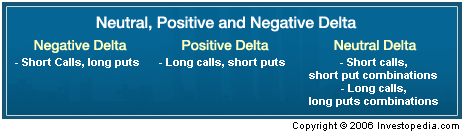
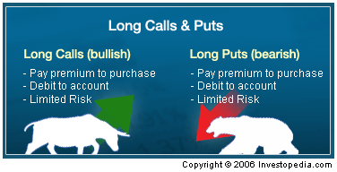
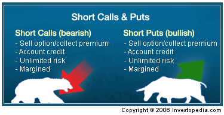
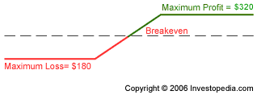
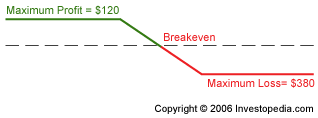
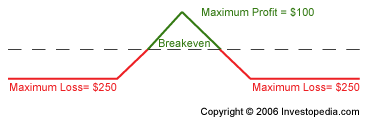
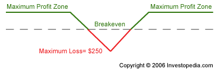
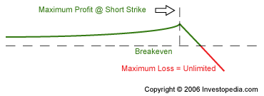
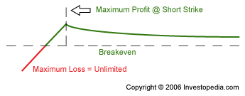

Too often, new traders jump into the options game with little or no understanding of how options spreads can provide a better strategy design. With a little bit of effort, however, traders can learn how to take advantage of the flexibility and full power of options as a trading vehicle. With this in mind, we've put together the following options spread tutorial, which we hope will shorten the learning curve.
The majority of options traded on
Using an option spread involves combining two different option strikes as part of a limited risk strategy. While the basic idea is simple, the implications of certain spread constructions can get a bit more complicated.
This tutorial is designed to help you better understand option spreads, their risk profiles and conditions for best use. While the general concept of a spread is rather simple, the devil, as they say, is always in the details. This tutorial will teach you what option spreads are and when they should be used. You'll also learn how to assess the potential risk (measured in the form of the "Greeks" - Delta, Theta, Vega) involved with the different types of spreads used, depending on whether you are bearish, bullish or neutral.
So, before you jump into a trade you think you have figured out, read on to learn how a spread might better fit the situation and your market outlook. If you need a refresher course on the basics of options and option terminology before you delve any deeper, we suggest you check out our Options Basics tutorial.
When you buy or sell a call or a put option, you are using only one option strike and, by definition, trading in a single contract month, with one expiration date and always only one underlying. The Greeks apply to that one option only. However, depending on the type of spread trade you might use, you may be incorporating not just different strikes, but multiple months and, in some cases (when trading futures options), multiple underlying contracts.
But before we get ahead of ourselves, let's start by thinking in terms of a basic spread and what that means.
If we were to reduce the idea of a spread to its most basic or essential characteristic, it would have to be its use of two option contracts, known as the "legs" of the spread. Using two legs simply means that you are combining, for example, a call option that you buy (sell) with a call option that you sell (buy). Therefore, you are taking both sides of the market in all spreads (buying/selling or selling/buying). That is the easy part.
While the spread is a simple concept, it can become a bit more difficult in practice - especially in terms of the implications for profit/loss given a directional move of the underlying. Many traders are less likely to consider risk dimensions measured by Theta and Vega, but that doesn't make them any less important. These Greeks, shown in Figure 1, are important measures of risk, so let's take a moment to review them. (For further insight, see Getting To Know The "Greeks" and Using The Greeks To Understand Options.)
Delta is a measure of exposure to price changes, Vega is a measure of exposure to volatility changes and Theta is a measure of exposure to time value decay. (For more on this, see The Importance Of Time Value.) Looked at in terms of a spread with two legs, these risk measures refer to the entire position (i.e. "position Delta", "position Theta", "position Vega"). The position Greeks will be explained further below, as we examine each type of spread discussed in this tutorial.
Figure 1 - The most important option "Greeks"
Since a spread trade always involves the use of more than one option strike price, let's examine what this means in terms of the Greeks. Remember that when you buy a call, for example, you are exposing yourself to the risk of a wrong-way move of the underlying (i.e. you don't want the stock to fall). Or perhaps you face risk from a too-slow rise of the underlying and potential loss from time value decay (i.e. you want a bullish move of the underlying and you want it as quickly as possible).
But when you construct a spread, which involves both selling and buying options as two sides or legs of the spread, you are taking the other side of the trade in the underlying. This fundamentally changes the risk you face. Now, since you have sold a call and bought a call (for example), you have less risk from a fall in the market and from decay of the premium (since the call you sold will profit from both these developments), instead of facing the risk of a wrong-way move as mentioned above when in a long call, or a market that moves too slowly in your intended direction.
In other words, the purchase of the call in question, given a bullish outlook, is subsidized by the sale of a further out-of-the-money (FOTM) call (the time premium collected offsets the purchase price of the call purchased). While limiting risk (we will come back to this below with an example), it also limits exposure to time value decay (the short call gains with passage of time) and downside price movement (the short call gains here, too).
You might be wondering how you can profit from a spread if you buy and sell a call (or put) that both gains and loses with not just wrong-way moves or no movement, but also with the correct move in the correct time frame. The answer can be found by looking at the different strikes chosen and the resulting differential position Theta, Delta and Vega resulting from any particular spread construction. The word "differential" is a fancy way of describing the net Theta, Delta or Vega values (what we have after combining the individual Greek values on each leg) of the spread. If you are confused, the examples below will help to make this somewhat abstract discussion more concrete.
Remember that with an outright option you have a measure of Theta, Delta and Vega (among other risk measures known as the "Greeks"). When you construct a spread using different option strikes, you in effect are combining the Delta, Vega and Theta of each strike into one trade, giving you a position Greek. For example, when you combine the two Delta values of each option in a spread, you now have a net Delta, or position Delta, which can be negative (net short the market) or positive (net long the market). This is true for Vega and Theta, as well as the other Greeks, but the implications of the signs on the values are different, as we will discuss later. (For more insight, see Going Beyond Simple Delta: Understanding Position Delta.)
|  |
| Figure 2 - Negative, Positive and Neutral Delta |
Before looking at the most commonly used spreads using call and put options, let's take a closer look at our idea of position Greeks and explore what this means in terms of the risk/reward story.
Limiting Risk with Long and Short Options Legs
We have seen that a spread is simply the combination of two legs, one short and one long (but not necessarily in that order), in our simple call spread example in the previous chapter. Now let's get into a little more detail in order to begin to understand how a spread can limit risk. After looking at the risk and reward of spreads versus outrights, the next step will be to explore how each spread works and what markets work best with available spread constructions, keeping in mind the changing risk profiles of each spread from the point of view of the position Greeks mentioned in the previous section.
Taking both sides in an option trade in the form of a spread creates an opposing dynamic. The long option risk is counterbalanced by the short option reward and vice versa. If you were to buy an out-of-the-money (OTM) call option on IBM and then sell a further out-of-the-money (FOTM) call option, you would have constructed what is known as a vertical call spread (we will discuss vertical spreads in all their forms in more detail later), which has much less risk than an outright long call.
When you combine options in this manner, you have what is known as a positive position Delta trade, as seen in Figure 2 of the previous chapter. Negative position Delta refers to option spreads that are net short the market. We will leave neutral position Delta spreads aside for the moment, returning to neutral spreads toward the end of this tutorial.
If IBM trades lower, for example, you would lose on the long OTM call option and gain on the short FOTM call option. But the gain/loss values will not be equal. There will be a differential rate of change on the option prices (i.e. they will not change by the same amount given the hypothetical drop in IBM stock, the underlying). The reason for the different rates of change in the prices of the two legs of the spreads is easy to understand – they are options with different strikes on the call options strike "chain" and, therefore, will have different Delta values (we will talk about Theta and Vega later).
Therefore, when IBM drops, the OTM long call option, having the larger Delta because it is closer to the money, will experience a bigger change (drop) in value than the change (drop) in the FOTM short call option. All other things being equal, a drop in IBM will cause the option spread value to decline, which in the case of this type of spread (a bull call debit spread) is always going to mean an unrealized loss in your account. But the loss is smaller than would have been the case if long just the OTM call.
On the other hand, if IBM rises, the opposite will occur. The OTM long call option will experience a greater rise in price than the FOTM short call option's price. This causes the spread price to increase, resulting in unrealized profits in your account. In both cases, for simplicity, we assume that the IBM move occurs just after taking the spread position and, therefore, time value decay has not become a factor yet.
As you can see, the risks of being wrong are reduced with a spread, but this is balanced with reduced reward if you are correct. Obviously, as with most things in life, there is no free lunch. Nevertheless, a spread trade does offer greater control of unexpected market outcomes and can allow you to better leverage your capital, leaving more capital available to use with another trade or trades. This conserved capital allows for greater diversification, for instance. And with credit spreads (which will be discussed next), which profit from time value decay, the use of a spread can increase the power of your margin dollar. That is, your risk-reward ratio can be improved in many cases.
Having seen how spreads work at a very basic level, let's turn to a closer examination of the mechanics of spreads with a look at what are called debit spreads, and then their reverse, spreads that generate a net credit in your account when opened, or credit spreads.
Spreads, as we have seen, are constructed by taking positions on the long (buying the option) side while simultaneously taking a position on the short (selling the option) side of the market. Figure 1 lists the major characteristics of long options which, as you may already know, offer unlimited potential profits with limited risk measured in the form of the premium paid for the option. And as you can see in Figure 2, selling options presents just the reverse, that is, unlimited potential losses with limited potential profit.
Therefore, when we combine these into a spread, the unlimited risk posed by selling an option (such as our FOTM IBM call option from previous examples), is hedged by the purchase of the OTM IBM call. Clearly, if IBM moves up to the strike of the sold option and it gets in the money, it only means that the long option in the spread will be gaining, but only profitably up to the strike of the short option (where gains are offset with losses, ultimately at 100%). If at expiration the short option is in the money, the long option will have offset any losses incurred on the short option. So where does the profit arise?
|  |
| Figure 1 – Long call and put options characteristics |
Looking at the spread in terms of expiration helps to reveal the profit/loss dynamics - most importantly, the potential profits. But we will need to go to a greater level of detail to show this. Let's look at our IBM bull call spread again, but this time, we'll add some more detail in terms of actual strikes prices and a month.
Let's assume that IBM is trading at 82, and the OTM long call is the October 85 call option trading at 3.00 ($300). When we combine this with our FOTM short call option, using, for example, the October 90 trading at 1.20 ($120), we get a vertical bull call spread, one of the most popular spread buying strategies used. Here we have bought the Oct 85, which is out of the money because the stock is trading below the strike of the call at 82. We paid $300 for this leg.
|  |
| Figure 2 – Short call and put option characteristics |
Had we not created a spread, this outright position would have a maximum loss potential of $300. There would also be unlimited profit potential should IBM move above 88 (85 + 3 = 88 breakeven) by expiration in October (the third Friday). But when we drop in another leg to create a bull call vertical spread, the total risk drops to $180 ($300 - $120 = $180). We took in $120 for the sale of the FOTM short call (Oct 90), thus reducing our total outlay upon opening the position to $180 (our new maximum loss amount).
This is now the maximum risk. The cost of this reduced risk comes in the form of limited upside profit potential. Instead of unlimited upside profit potential, the maximum profit potential is capped at $380 per spread. This amount is determined by taking the size of the spread (90 – 85 = 5) and subtracting the premium paid for the spread (1.80), leaving 3.20 (or $320) in potential profits. The long call will profit up to the strike of the short option, at which point the long call gains are canceled by the short call losses. As seen in Figure 3, since we paid $180 for the spread and its value at expiration if at the short strike or higher can never be more than $500, the net gain would be $320 ($500 - $180 = $320).
|  |
| Figure 3 – Vertical bull call debit spread |
We will come back to more examples of vertical spreads, using puts as well as calls as examples. For now, it is important to understand the basic risk/loss parameters in this vertical call spread since the core concept largely carries over to other spread constructions.
Now that you have a basic idea of what an option spread looks and feels like (of course limited to our simple vertical bull call spread), let's expand on this foundation to other types of spreads and take a look at another example of a vertical spread. For this example, we will make time a friend to the spreader.
The example from the previous chapter used IBM call strikes of October 85 and 90 to illustrate a simple vertical call debit spread. Recall that vertical means using the same month for constructing the spread. If we were to reverse this type of spread, we would invert the profit/loss dynamics, and it would lead to a credit in your trading account upon opening the position. The objective of the credit spreader - and the parameters of the potential profitability of a credit spread - is fundamentally different despite the mirror image seen in the spread design (i.e. selling instead of buying the OTM and buying instead of selling the FOTM IBM call option).
Because the options used to construct the vertical spread expire at the same time, there is no need to be concerned with rates of time value decay across different months (such as in calendar, or time spreads, which are covered in the horizontal and diagonal spreads section that follows). To visualize the profit/loss dynamics of a vertical call credit spread, let's return to the example of a vertical call spread with IBM options, where we bought the October 85 and sold the October 90, but this time for a hypothetical debit of $120. Now we will reverse this order and generate a credit spread in the process. As seen in Figure 1, the lower right-hand side of the profit/loss plot shows the maximum loss of $380and upper left-hand side shows the maximum profit potential of $120.
The maximum loss of $380 results from the short October 85 call expiring in the money but having losses limited by the long side in the trade, the October 90 call.
|  |
| Figure 1– Vertical bear call credit spread |
Here we have taken in a net credit and will profit if the underlying stock closes below 86.20 (85 + 1.20 = 86.20) at expiration, which means we would want to have a neutral-to-bearish outlook on the stock when using this type of spread. The breakeven is determined by adding the premium of the spread (1.20) to the strike price (85). In other words, for a loss to occur, the stock has to trade up to the short strike in the bear call spread and exceed the credit collected (1.20).
For example, if IBM closes at 87 on expiration-day - the third Friday of October - the short option will be in the money and settle at 2.00 (87 – 85 = 2.00). Meanwhile, the October 90 strike will have expired out of the money and will be worthless. The credit spreader will be debited 2.00 (the amount the October 87 is in the money) at settlement, which will be offset only partially by the amount of premium collected when the spread was opened (1.20), for a net loss of -.80, or -$80. For each spread, there would be a loss of $80 in this scenario.
Whether using a vertical debit or credit spread, the same principles are at work on the put side. You could use a put debit spread (known as a bear put spread) to trade a bearish outlook (buying an ATM put and selling an FOTM put). On the other hand, if you had a bullish or neutral outlook, you could construct a put credit spread (known as a bull put spread), which involves selling an ATM put and buying an FOTM put to limit potential losses. The profit/loss profile is identical to the vertical call spreads outlined above.
When we employ the same strikes in a spread, by definition, it means that we need to use different months, otherwise the trade is an offsetting one (a buy and sell order on the same strike would cancel out). Known as a horizontal spread (going across different months but using the same strikes), the profit/loss dynamics are again fundamentally different from those we saw in the vertical bear and bull call spreads. Figure 1 presents a summary of the key buy-sell combinations that define horizontal spreads, as well as vertical and diagonal (to be covered next) spreads.
| Spread Type | Vertical | Horizontal | Diagonal |
| Credit Spreads |
Sell out of the money (OTM), buy further out of the money (FOTM) |
Buy front month ATM, sell back month ATM |
Buy/sell front month, sell/buy back month using different strikes |
| Debit Spreads |
Buy OTM, sell FOTM |
Sell front month ATM, buy back month ATM |
Buy/sell front month, sell/buy back month using different strikes |
| Figure 1 - Put spread constructions - months and strikes |
Since horizontal spreads involve selling and buying (or buying and selling) options with different rates of time value decay (i.e. the Theta values are not the same on each option in the spread because one option expires before the other), these types of spreads are known as calendar (or time) spreads. Their source of potential profit, therefore, is a differential rate of time value decay on the two option legs in the spread. (For more insight, see The Importance Of Time Value.)
The horizontal time spread is presented usually as a strategy to deploy if you have a neutral outlook on the underlying. Since it profits from differential rates of time value decay, it does not like movement of the underlying. Too much movement of the underlying, in either direction, will result in losses, which are defined always by the size of the debit (purchase price) of the spread. Another important, but often overlooked, dimension to these spreads is the exposure they have to changes in volatility, measured in position Vega.
Recall that position Vega refers to the degree to which the strategy will suffer or gain from a change in volatility. In horizontal time spreads, since you are short the nearby month and long a back month (which could be the next month or farther away month), you will have differential Vega on the options in the spread. That is, the back month option will always have more Vega than the front month because it has more premium. Therefore, if you are buying the back month, you are creating a spread with more long Vega than short Vega, meaning the spread will profit from a rise in volatility. Below you will see that when we reverse these time spreads (buying the nearby and selling the back month), the position Vega is reversed, leaving you exposed to a rise in volatility (and potentially profiting from a fall in volatility).
The position Vega of the horizontal time spread constructed by selling the front month and buying the back month makes these trades problematic for a neutral outlook. If you want the stock to stay in a narrow range, you are unlikely to have an expansion in volatility, which would help this spread from the perspective of the Vega dimension. On the other hand, if you have a rise in the level of volatility, it may help lend a hand in reducing actual risk (and just the opposite when the levels fall). These trades are often excellent short-term position Delta neutral trades to put on to play a quick change in volatility levels, which will produce an immediate profit. This works best at market bottoms. (To learn more, read Capturing Profits With Position-Delta Neutral Trading.)
Continuing with the IBM example, let's say the stock is trading at 85 and we have a neutral outlook. We could set up a horizontal time spread by selling an ATM call and buying a call option at the same strike in a back month. Let's say we sell the June 85 and buy the October 85. Keep in mind that the same structure could be applied using puts and it will not affect the outcomes since premiums should be close to parity for the ATMs.
The prices of the options are contained in Figure 2 below. As you can see, the nearby is trading at 1.70 ($170) and the October at 4.20 ($420). Therefore, if we sell the June and buy the October, we pay $200 for the spread, which defines our maximum loss (a concept that will become clearer below). In the same table, the Theta and Vega values have been included to illustrate the points mentioned above.
|
IBM Calls |
Premium |
Theta |
Vega |
|
Sell June 82.5 |
+1.70 |
+2.87 |
-9.83 |
|
Buy Oct 82.5 |
-4.20 |
-1.64 |
+21.20 |
|
Differentials |
-2.50 |
+$1.23 |
+11.37 |
| Figure 2 – IBM horizontal time spread details |
The cost of this spread would have been $250, or the difference between the purchase of the October 82.5 and sale of the June 82.5. That this represents your maximum loss can be seen easily if you think of the stock falling to zero. If the stock were to go to zero, both options would be worth zero and you would lose $420 on the October (the leg you are long) and gain $170 (the leg you are short) on the June, leaving a loss of -$250, as seen in Figure 3, below. In other words, the spread can go only to zero, always limiting your losses. On the winning side, if the spread narrows, you'll have the potential to close the trade at a profit. The spread narrows if the nearby month loses value faster than the back month. As you can see in Figure 2, the Theta values are not the same. The June 82.5 is gaining $2.87 per day at present but the October 82.5 is losing just $1.64 per day.
At this differential rate of decay (+$1.23 per day) the position will continue to show unrealized gains provided the underlying stock does not move too far either way, or the levels of volatility don't change much. Note that the position is position Vega long, meanwhile, with the October gaining +$21.00 for each percentage point rise in volatility, which is offset by a smaller negative Vega of just -$9.83 per point change in volatility. The position Vega, therefore, is +$11.37.
If the spread is projected over about 33 days left in this trade (given that the rate should accelerate), the returns should be approximately $100 if the price of the underlying does not change, as you can see in Figure 3. But this does not factor in volatility changes, if any were to occur.
|  |
| Figure 3 – Horizontal call time spread profit/loss |
This is fine if the volatility remains unchanged, and that may take place if the stock hardly moves. But if changes in underlying volatility, or the implied volatility, take place for whatever reason (implied may rise without movement if investors anticipate a big move ahead), the picture gets messy. Again, it would be hurt by a fall in volatility and helped by a rise because this classic horizontal time spread is long Vega. Therefore, this type of trade might work well going into an earnings announcement if you are looking to ride the rise in implied volatility generated by speculative demand in puts and calls ahead of any big announcement. Of course, you would need to get long Vega with a time spread ahead of a rise in implied volatility, and hopefully get out before it dropped again.
In short, the horizontal time spread has profit potential from differential time value decay, but it might be more realistic to use these as long volatility plays. As you will see below, by reversing this trade, you might be able to profit from a fall in implied volatility following the news event that drove up current levels of volatility to above-normal levels (of average volatility). Here you would hope to gain from getting short volatility, which you will see in Figure 4 below, can be accomplished with small risk with a reverse time spread. The reverse time spread simply changes the order of the spread from sell front month to buying front month. And on the back month, you would reverse it from being long to short. As you can see in Figure 4, the position Vega is now negative, meaning it will profit from a fall in volatility. But the trade is not exposed to a negative position Theta, meaning it loses from time value decay.
|
IBM Calls |
Premium |
Theta |
Vega |
|
Buy June 82.5 |
-1.70 |
-2.87 |
+9.83 |
|
Sell Oct 82.5 |
+4.20 |
+1.64 |
-21.20 |
|
Differentials |
+2.50 |
-$1.23 |
-11.37 |
| Figure 4 – IBM reverse horizontal call time spread details |
To finish with the non-reversed example of IBM horizontal spread, Figure 3 shows the maximum profit potential of this type of trade (abstracting from volatility changes). For example, if IBM settles right at 82.5 on the third Friday of June (the month of the call option we sold), we keep the entire premium collected from the sale of that option. Meanwhile, the October 82.5 call would be liquidated at that point, taking a loss. But the loss would be smaller than the gain from the sale of the June call, leaving our maximum profit. As you move higher or lower, the potential for profit declines and eventually poses potential losses, as seen in Figure 3. The spread, in this case, does not widen and instead narrows, leaving potential losses. This occurs in either an up or down market because the position Delta dynamics swamp the potential for a differential rate of time value decay to provide a profit. However, keep in mind that a very small rise in volatility can improve dramatically the prospects for profit here (not captured in this diagram).
Let's take a look again at reversing this spread. It should be clear by now that when we reverse this horizontal time spread, the position Greeks reverse as well. So the position becomes position Theta negative (you are losing with time value decay) and position Vega negative (meaning a potential to win with a fall in volatility). Clearly, this would mean that this trade requires an entirely new set of conditions for potential profit. In short, you would want to put this trade on if you expected the market to make an explosive move with an associated fall in volatility (implied). Typically, this occurs at market bottoms in equities as fear subsides and premiums fall on options when the stock reverses. As can be seen in Figure 5, the maximum profit can be found at the extremes of price movement, otherwise time value decay will produce a loss on the purchased nearby option that is greater than any potential gains on the back month sold option.
|  |
| Figure 5 - Reverse horizontal call time spread profit/loss |
By John Summa, CTA, PhD, Founder of OptionsNerd.com
Spreads with Different Months and Different Strikes
Now that we have covered the basic spreads - debit/credit vertical and debit/credit horizontal - taking the next step to a diagonal should be easier. Recall that spreads can be done either as debits or credit spreads, and can be constructed with puts or calls. That said, with a diagonal spread, we are going to take the horizontal time spread and move the long leg to a different strike. That's it! It's easy. Diagonal simply refers to choosing a back-month leg that is not the same as the front-month leg. Figure 1 contains the key relationships in terms of months and legs for our three types of spread constructions - vertical, horizontal and diagonal.
| Spreads | Months | Strikes |
| Vertical | Same | Different |
| Horizontal | Different | Same |
| Diagonal | Different | Different |
| Figure 1 - Spread types - months and strikes |
To understand diagonal spreads, you first must understand differential time value decay, which we explained in the horizontal spread section of this tutorial. Unlike in a horizontal spread, when we go diagonal there are multiple combinations of possible constructions. A diagonal spread has only two possible strike combinations, which must always be the same. While it is possible to establish an out-of-the-money horizontal spread, the basic dynamic at work in diagonals and horizontals is the same - differential Theta.
Let's view an example of a diagonal call spread using IBM again. In this case, we will construct the diagonal with a credit (there are other possibilities) using puts instead of calls. Suppose we sell an out-of-the-money call at 90 and buy a further out-of-the-money call at 95. And let's say we sell the 90 in September and buy the 95 in October. If we sell the September for 50 and buy the October for 10, we would have the maximum profit at the short strike of 50 when September expires, as can be seen in Figure 2. This is easy to understand. If IBM trades up to the short strike of the diagonal spread and expires at that strike, we retain the entire $50 for selling the September 90 strike.
|  |
| Figure 2 - Diagonal call credit spread profit/loss |
At the same time, the October 95 is going to have additional time premium on it as it is presumably now only five points out of the money (recall that when we put this on, IBM was trading at 82.5). Therefore, there also will be a profit on the long October 90 call, even though time premium decay will have taken some value out of the option. Let's say the October 95 now has $30 in premium. Taken together the total position at this point would have made $80 if closed out.
|  |
| Figure 3 - Diagonal put credit spread profit/loss |
The advantages of using a diagonal spread for credit spread can be found in the potential gains on the long back-month option. In terms of position Vega, meanwhile, unless you go too wide on the spread between the nearby and back month options, you will have a positive position Vega - which gives you a long volatility trade, just like our horizontal time spreads seen above. What is interesting about the diagonal, however, is that it may begin at neutral or slightly position Vega short (typical if a credit is created when putting it on). But as time value decays on the nearby option, it gradually turns position Vega long. This works particularly well if using puts to construct the spreads because if the stock moves lower, the long option captures the rise in implied volatility that usually accompanies increasing fear surrounding the stock's decline.
When the diagonals are reversed, just as with reversed horizontal spreads, the spread experiences a flip to basically short Vega (loses from rise in volatility) and negative position Theta (loses from time value decay). The trade has the mirror image of potential profitability seen in Figure 2 and Figure 3. Generally, these trades should be constructed mostly with the idea of trying to profit from a quick change in volatility, since the probability of having a big enough move of the underlying is usually quite low.
Now that you have obtained a solid foundation for underlying option spreads, here are some tips on how to use them. In this section, we'll focus on the use of orders, liquidity and some margin-related matters.
Spread trades, as a rule, should be established using a spread order, leaving legging into the spread (placing one leg at a time) to the pros. The possibility of having the market move against you while trying to leg in makes using spread orders imperative. But what type of spread orders should you use? Generally speaking, you should always work a spread order using a limit price to assure you get the desired price that will make the spread work out according to plan. For example, because there is a limited profit potential in many spreads, it is essential to get filled correctly, or not to get filled at all. Limit orders serve this purpose well.
In today's online trading environment, simple spreads can be placed with limit orders and filled without too much trouble. Of course, it is important to make sure the option strikes comprising the spread have enough liquidity, measured in open interest and daily volume. The options should have at least a few hundred options traded (on average) daily with at least as much open interest if you are doing spreads that may require removal of the spread when it gets into trouble, or the execution of adjustments.
If you simply plan to hold a debit spread (buying spreads) until expiration, then liquidity is not as important. However, be aware that the more liquid the market, the better the pricing. With little liquidity, the market makers tend to widen the bid-ask spreads, making achieving your profit objectives more difficult. Always examine option prices for a few days to get an idea of how they are being priced if you are not sure about what size the bid-ask should be. You can also compare the bid-ask spreads across stocks of similar price (but different liquidity) to evaluate how wide the market is.
In most of the spreads presented in this tutorial, margin requirements are straightforward. For example, if you were to sell a vertical credit spread like the IBM call credit spread presented in the previous section using the strikes that are five points apart, the margin on the account would be the size of the spread minus the premium collected. In this case, since we collected $120 in premium, the margin requirement would be $500-$120=$380. If we were to retain the entire premium collected as profit, the rate of profit on the required (and maximum margin) would be 24% (abstracting from commissions).
For debit spreads, the capital required to open the position is always the cost of buying the spread. All debit spreads are strategies that are bought, so there must be enough capital in the account to pay for the spread.
For diagonal spreads, the margin story is not quite as simple. If the spread is established in a futures options market, a margin system known as SPAN applies. SPAN margin offers the advantage of having the nearby short option in a diagonal call or put credit spread looked at as a covered option. In most equity options brokerage accounts, the short leg across months is margined as a naked option, which can significantly impact overall performance due to the extra margin that is required to trade the strategy.
Finally, when applying horizontal and diagonal spreads to futures options, you may be trading two underlying contracts. For example, an S&P 500 futures options June-September diagonal put spread would have the June trading on the June futures and the September option trading on the September futures contract. It is not a big issue really, but something to be aware of if you decide to explore options on futures as an additional arena for applying options spreads.
If you plan to use options spreads, you will discover that they have some major advantages over outrights. In fact, the full power of options as a trading vehicle doesn't really become known until you develop a good understanding of the workings of spreads. Most importantly, the selling side of option spreads has the greatest potential because you can profit from both time value decay and leverage of holding a long option in, for example, a diagonal spread. Even if using debit spreads, however, there are excellent hidden advantages mostly overlooked by novice traders. Certain debit spreads, for instance, can give you the ability to profit from time value decay (on a short out of the money leg) and potentially gain on the long side (from an in-the-money leg).
The advantage with the in the money debit spread is that you can cover the short option with a long in-the-money option instead of holding the stock itself, which entails much greater risk. And reducing risk is really what spreads are all about.
Risk reduction that is greater than the reduction in potential reward, ideally, means that you develop a trading advantage. Spreads offer that possibility if done correctly. Overall, given the ideas presented here, you should be able to expand your available trading options, and provide yourself with further opportunities for a payoff in the long run.
{kind=link}
{kind=link}
{kind=link}
{kind=link}
{kind=link}
{kind=link}
{kind=link}
{kind=link}
{kind=link}
{kind=link}